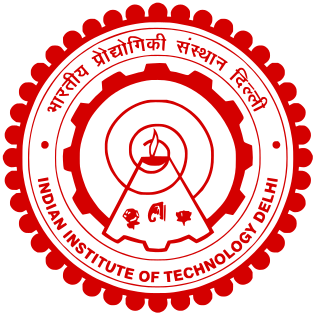
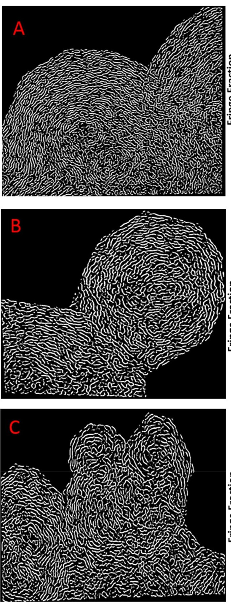
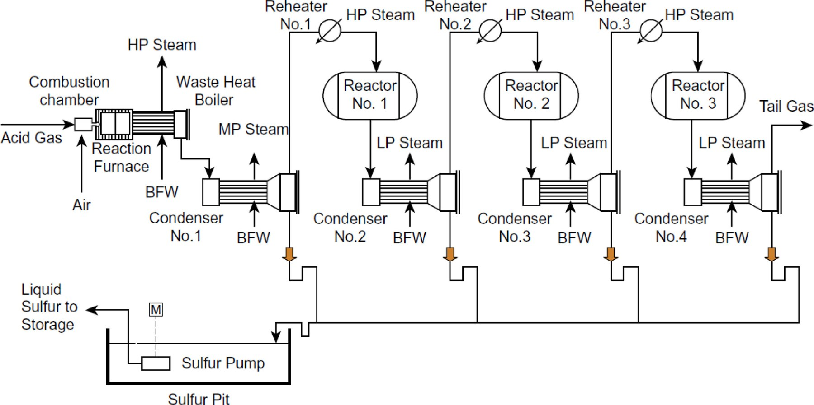
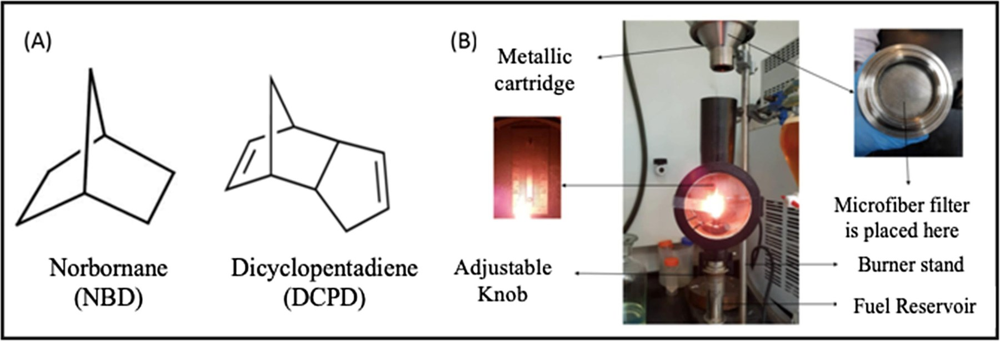
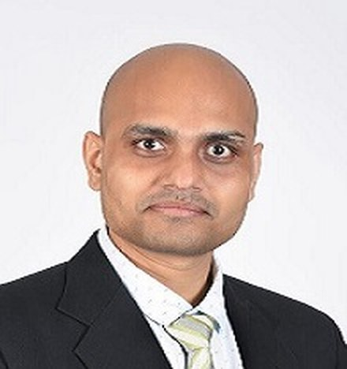

Department of Chemical Engineering · IIT Delhi
CERL studies how fuels burn at the level of individual reactions — how soot particles nucleate and grow, how sulphurous species behave in gas-processing furnaces, and how hydrogen-rich streams can be recovered from waste gas. We build detailed kinetic mechanisms, test them against experiment, and use them to cut pollutant emissions from engines and process plants.
A flame from the group's own burner, the soot-formation pathway it is used to study, and the hydrogen-blending rig built to test gas mixtures.
The Combustion Engineering Research Laboratory sits in the Department of Chemical Engineering at IIT Delhi and is led by Prof. Abhijeet Raj. The group works across the full chain from elementary reaction kinetics to plant-scale process design: developing and validating detailed reaction mechanisms, characterising soot and particulate matter from real fuels, and applying that chemistry to sulphur recovery units, hydrogen production and engine emissions.
Work in the group combines chemical kinetic modelling and reactor simulation with experimental characterisation of combustion-generated particles.
Each is described in detail, with representative figures, on the research page.

Growth of polycyclic aromatic hydrocarbons, soot nanostructure, and how fuel composition and trace metals change the particles an engine emits.

Detailed H2S and sulphur combustion kinetics, contaminant destruction, and new process configurations for Claus and sulphuric acid plants.
Recovering hydrogen from acid gas by thermal decomposition, and integrating sulphur combustion with existing recovery units to raise yield.

Biodiesel, terpene and oxygenate blends: their ignition behaviour, cetane response and effect on sooting tendency.
CERL is led by Prof. Abhijeet Raj, with one postdoctoral researcher and four doctoral scholars.

Professor of Chemical Engineering. PhD, University of Cambridge. Editor, Journal of Environmental Chemical Engineering.
Postdoctoral researcher at CERL.
Rafiq Bin Hassan, Hittal Deore, Nikhil Kumar and Parvez Alam.
Abhijeet Raj is promoted to Professor in the Department of Chemical Engineering, IIT Delhi.
Prof. Raj joins the editorial board of the Journal of Environmental Chemical Engineering (Elsevier) as Editor.